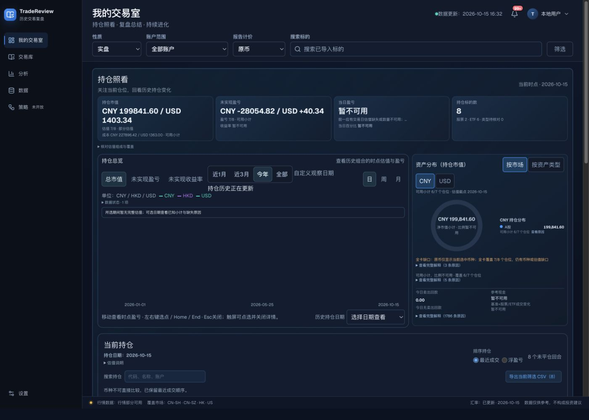
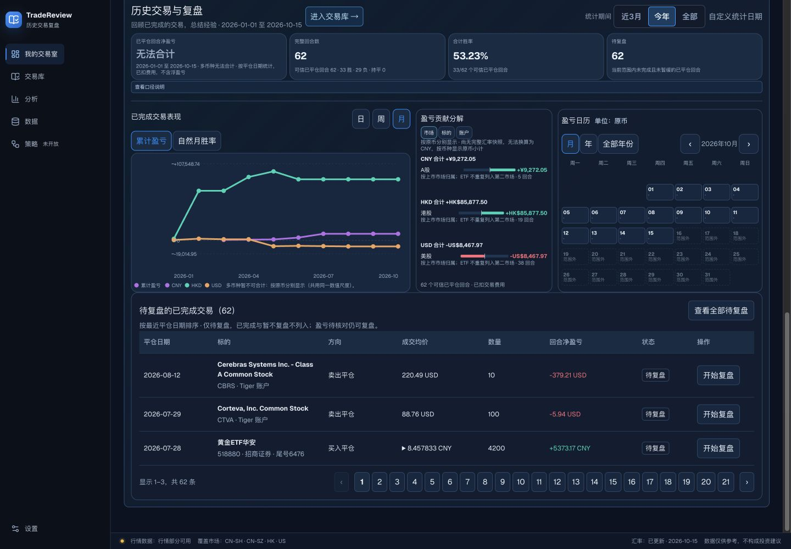

文档附页 · 1.0
返回正文阅读器首页现状问题评估
本评估独立于《首页视觉与交互规范》。对象是 master 7a5d137d；以下是基于实际截图、源码和历史要求作出的判断，不是已批准的新设计，也不表示本次已修复产品。
最大问题：可信度说明占据主路径，下一步行动不够突出
首页已经认真处理了估值缺失、币种不可合计和样本不可信，但读者要穿过大量小字、边框、折叠解释和空图，才到达具体行动。当前默认范围里，持仓历史图大面积没有完整估值；分布卡同时出现局部覆盖、全卡缺口、完整解释和现金原因。它们分别有正确理由，却没有形成一个明确的“现在先处理什么”。


这会造成两个阅读成本：一是用户把精力花在理解不可用的差别；二是首次打开页面难以判断该补数据、看某个持仓，还是开始复盘。当前“看图·记录”和“开始复盘”都在较下方，视觉上也与很多局部按钮相似。问题的核心是任务优先级，而不是简单把卡片换色。
建议下一轮先明确每日主任务，并为每类缺口给一个最相关的动作：概览保留“当前结论 + 覆盖 + 下一步”，详细原因进入可追溯的展开层。仍然必须保留未知值、币种、时点和样本边界，不能为了简洁制造一个假总数。
1. 同级信息密度不一致
1440px 下页面标题24px，工作区19px；部分图表标题13px，贡献文字及日历更小。短时间扫读时，用户容易只看见图形却读不清口径。分布、贡献和待复盘表各自采用不同按钮尺寸，视觉上不像同一套工作台。
影响：可解释性虽然被保留，解释本身却不容易阅读。建议先建立字号和间距层级，再处理局部紧凑规则；不能用全局放大导致图表相互挤压。
验证方法：在1440、1280、390和320视口，用真实长名称、跨币种、部分估值和大量待复盘数据对照；读者无需放大即可识别主结论、覆盖和动作。
2. 多套范围控制需要更清楚地说明作用域
页头有共享范围，持仓图有观察日期，下方历史有统计日期，图表又有日周月。它们在业务上可以同时存在，但“今年”“月”“日期”的外观近似，用户容易以为改变其中一个会影响整页。
建议在相邻位置持续展示“影响什么”的简短说明，验证两个日期作用域之间的联动或独立规则。现状文档已经按源码区分，不把这个建议预写成实现。
验证方法：切换历史统计期后，当前持仓保留当前时点；切持仓图粒度后，摘要数值不能被误当成同一统计变化。实际状态关系必须通过浏览器对比，不能只看按钮高亮。
3. 原币模式保护了正确性，也增加比较成本
摘要分币种写在同一个大数字区域，长值换行；历史趋势把不同币种画在共用数值尺度上。页面明确标了不可合计，但读者仍可能用线高比较跨币种表现。
建议在保持原币真实性的前提下，验证分币种展示的阅读方式；有完整FX证据时再考虑统一计价。不能默认把同一图里的较高线解释为更好的回报。
4. 复盘闭环的入口位置偏后


待复盘提供了真实工作队列，但位于持仓表和历史图表之后，样本中21个页码同时出现。首页因此兼有概览、诊断、长表和待办工作台四种角色。
建议下一轮明确首页承担多少工作量，比较“首页显示少量明确优先项”与“继续在首页完整分页”的成本。该建议需要用户决定工作习惯，本次不调整列表内容或默认顺序。
5. 当前观察中需要后续复核的行为
日期选点详情在一次选择后能够出现，但随后操作时已不在DOM中；页面也出现持仓历史更新中的状态。尚未证明是正常指针离开、后台重算还是状态稳定性问题，因此记录为待复核，不能直接定性为产品缺陷。
本次隔离样本的当前持仓小计与历史同一天选点小计不同。两者可能有不同计算/行情覆盖边界；在未核对完整模型前不判定金额错误。下一轮应核对同一日期、账户、币种、估值与交易截点，明确界面是否已足够解释差异。
建议优先级与边界
| 优先级 | 要解决的问题 | 先验证什么 |
|---|---|---|
| P1 | 首屏不能快速指向下一步 | 默认真实数据下，读者能否说出当前最需要处理的一件事 |
| P1 | 小字与解释密度 | 不放大时能否读清结论、币种、覆盖和动作 |
| P2 | 范围作用域容易混淆 | 三类控件改变后，用户能否正确预测影响区域 |
| P2 | 跨币种线图容易误比较 | 读者是否误把线高当成统一收益比较 |
| 待复核 | 时点详情消失、同日小计差异 | 以固定数据和明确截点重现，区分正常语义和缺陷 |
以上改进不应混进现状验收，也不授权本次修改首页。